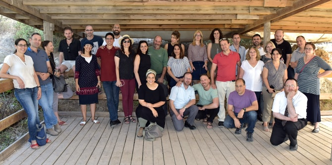

הסמינר, שנערך במסגרת תוכנית ההמשך של יחידת בוגרי מנדל ונמשך יומיים, הוקדש לבחינה מחודשת של נושא המנהיגות והיזמות. פעילות הסמינר כללה חשיפה למיזמים חברתיים, קהילתיים, חינוכיים ועסקיים יוצאי דופן, מפגש עם יזמים מעוררי השראה והיכרות עם מודלים שונים של יזמות ומנהיגות – מתיאוריה למעשה. המפגש המשותף לשני המחזורים אִפשר להבנות מסד רחב של חיבורים ושותפויות, שיח עמיתים, העמקת ההיכרות בין חברי הקבוצה וחיזוק השותפות עם יחידת הבוגרים כבית מקצועי המלווה עשייה מחוללת שינוי.
הסיור נפתח ב"אורקם" – חברת היי-טק חדשנית בתחומי הראייה הממוחשבת, בינה מלאכותית ולמידת מכונה. הבוגרים שמעו על פיתוחיה פורצי הדרך של החברה והתוודעו לאופן שבו הם תורמים לשיפור איכות חייהם של אנשים בעולם.
אחר כך המשיכו למתחם פיקו, מיזם ירושלמי שמטרתו לחולל שינוי בכלכלת העיר ולהפוך אותה למרכז טכנולוגיה. מתחם פיקו משמש כקהילה אשר רואה ביזמות כלי מרכזי לפיתוח חברתי, ומארח מפגשים של יזמים, פעילים חברתיים, אמנים וסופרים. הבוגרים נפגשו עם אלי וורטמן, אחד משני היזמים שיסדו את המקום, ושמעו ממנו על חזונו ועל ניסיונו העשיר כיזם, משקיע ומנהל.
אחר כך ביקרו הבוגרים ב"שלוה – המרכז הלאומי לטיפול באנשים עם מוגבלויות" – ארגון שנוסד על בסיס האמונה כי האחריות לדאוג לילדים עם מוגבלויות אינה צריכה להיות רק של המשפחה שבה נולדו. במקום פועל בית קפה חברתי המעסיק אנשים עם מוגבלויות, ואשר "הוקם במטרה להגביר את המודעות לשילוב של אנשים עם מוגבלויות בחברה וחרט על דגלו את ערכי הסובלנות החברתית וקבלת האחר". בערב התקיימה סדנה על יזמות מפריזמה של כישלון והצלחה, ובמסגרתה הוזמנו הבוגרים לשתף בניסיונם וניתנה הזדמנות לרפלקציה אישית וקבוצתית.

למחרת ביקרו הבוגרים בחורשת אי הילדים בצובה – מתחם פעילות אתגרית וחינוכית המוקדש ומונגש לבעלי צרכים מיוחדים, שהוקם על-ידי חקלאים מענף המטעים בקיבוץ. הבוגרים פגשו את היזם אלון גרינבוים ושמעו ממנו כיצד הפעילות בחורשה מאפשרת לבעלי צרכים מיוחדים לחוות חוויות ספורט וחיבור לאדמה ולטבע, ומהווה כלי למתן שוויון הזדמנויות לאוכלוסיות מיוחדות להשתלבות בחברה הישראלית.
משם המשיכו לעין ראפה, שם פגשו את יו"ר הוועד המקומי עלא ברהום, שסיפר על הרפורמות המשמעותיות שהוא מוביל בכפר בתחום החינוך הבלתי פורמלי ותנועות הנוער, בניית מנהיגות מקומית, שיפור תשתיות, עידוד ליזמות קהילתית ועסקית וגיוס משאבים. הם ביקרו ב"סינגל עין ראפה" – שביל אופני השטח הראשון שנסלל בשיתוף פעולה של תושבי כפר ערבי יחד עם קק"ל. הסינגל הוא פרי רעיון של עלא ברהום, אשר בשיתוף עם גידי בשן מקק"ל סחף את בני הכפר והביא למהפכה של ממש בתפיסת הכפר את עצמו כיעד תיירותי. הבוגרים שמעו מגידי גם על שימור נוף השטחים הפתוחים בהרי יהודה.
משם המשיכו הבוגרים לבית הספר השש-שנתי עין כרם, אשר לאחרונה מונה למנהלו עמית מחזור כ"ה בבית ספר מנדל למנהיגות חינוכית
אסף שמר. בשנת 2015 זכה בית הספר בפרס חינוך ארצי על היותו מוביל בערכים וביוזמות חברתיות וכן בהישגי תלמידיו. לביה"ס מסלול "יזמות חברתית" – תכנית שש-שנתית ייחודית הכוללת לימודי מגמת 5 יח׳ לבגרות המאושרת על-ידי משרד החינוך, ומקנה לתלמידים ידע תיאורטי ומעשי בהובלת מיזם חברתי. הבוגרים פגשו את
לילי בן עמי, רכזת המגמה ומייסדת "קהילת יזמות חברתית בחינוך" – קהילה ארצית של אנשי חינוך מובילים. אנשי החינוך מבין הבוגרים שהשתתפו ביקשו להצטרף לקהילת היזמות שהקימה בן עמי, והתעניינו במגמה שפתחה בבית הספר מתוך רצון לפתח כזו במוסדות שבהובלתם. את הסמינר הובילו
רקפת מוסק מנהלת הייעוצים ביחידת בוגרי מנדל, ושרונה בר-נס, חברת סגל בכירה ביחידה.
{kind=link}